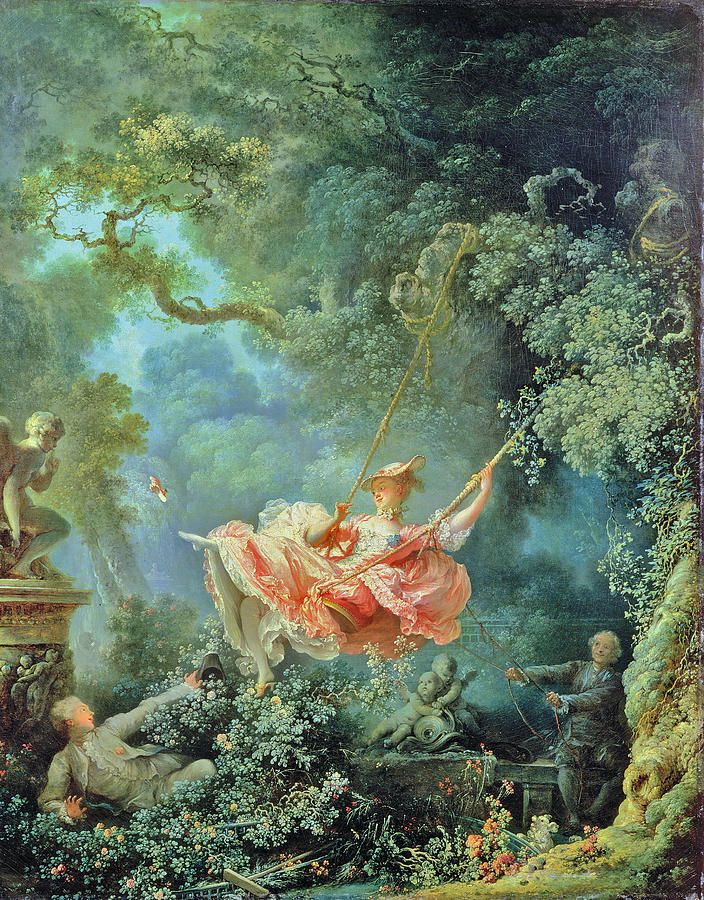
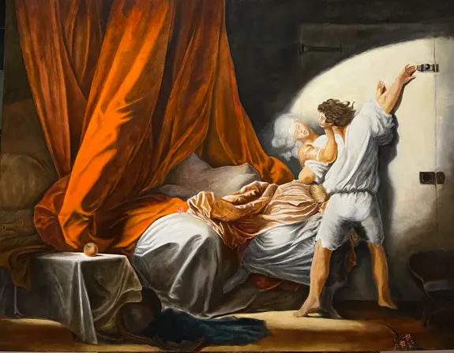
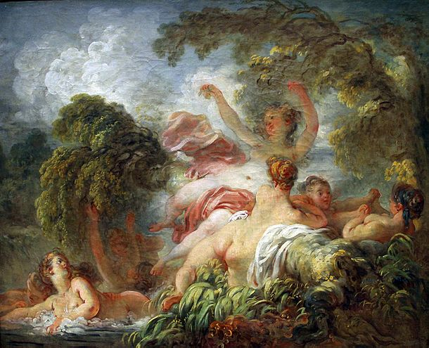
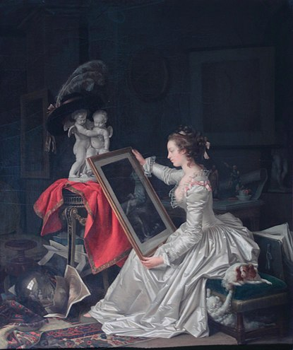
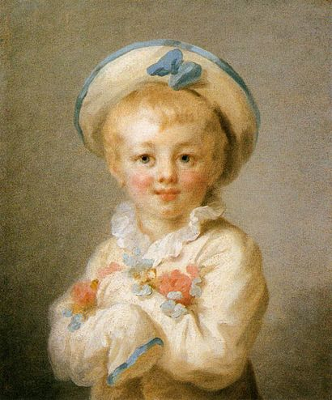
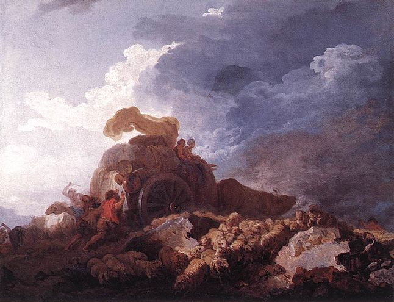

Jean-Honoré Fragonard
Jean-Honoré Fragonard è stato un noto pittore francese del XVIII secolo, considerato uno dei massimi rappresentanti del Rococò. Nato nel 1732 a Grasse, iniziò la sua formazione artistica a Parigi sotto la guida di François Boucher. La sua opera più famosa è la serie di dipinti intitolata "Il progresso dell'amore", commissionata dalla marchesa de Pompadour. Fragonard è noto per i suoi dipinti di scene idilliache e sensuali, caratterizzati da colori vivaci e un forte senso del movimento. La sua tecnica pittorica era sorprendentemente libera e veloce, rivelando un talento naturale e innato per l'arte. Nonostante il successo ottenuto durante la sua carriera, Fragonard cadde in disgrazia alla fine della sua vita e morì in povertà nel 1806. Tuttavia, il suo contributo all'arte del Rococò è ancora oggi molto apprezzato e studiato.
     